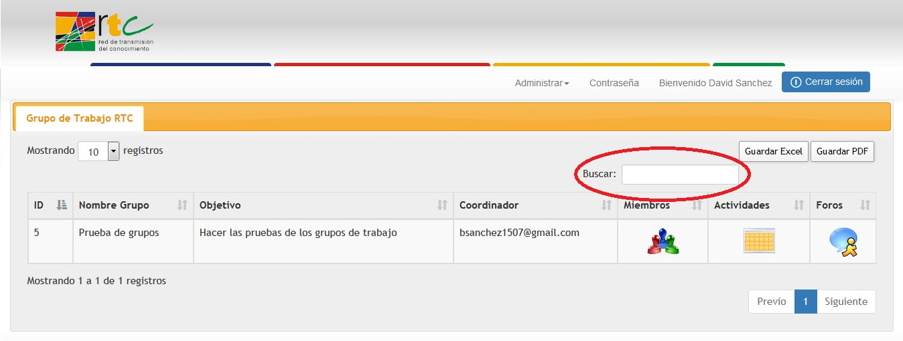
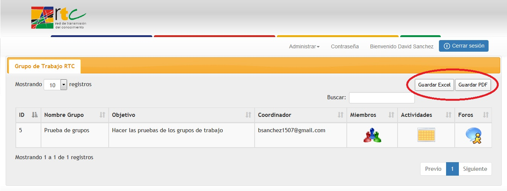

En la pantalla principal de grupos de trabajo podrá encontrar un listado con los grupos de trabajo que tiene a cargo, este listado cuenta con cuatro datos del grupo (ID del grupo, nombre del grupo, objetivo del grupo y coordinador del grupo). Ademas encontrara tres opciones las cuales son:
- Miembros
- Actividades
- Foros

Para desplazarse de forma mas fácil por la lista, encontrara una opción que le permitirá buscar un grupo de forma especifica, para realizar el filtro, el coordinador puede utilizar el ID del grupo o el nombre del grupo.

La aplicación cuenta con una opción la cual le permite exportar el listado de los grupos que se tienen a la fecha, el coordinador podrá escoger el formato en el cual desea exportar el listado (Microsoft Excel o PDF).

Created with the Personal Edition of HelpNDoc: Easily create PDF Help documents